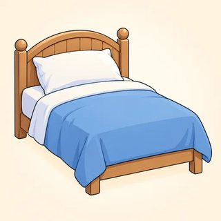

Fluency & the Final Project — Classroom Materials
Everything to print for Classes C23–C25: flashcards (tags, intonation arrows, conversation phrases, phrasal verbs), the teacher's listening scripts, the small-talk mingle cards, the Split or Stick? sorting game, the Sort It Out A/B cards, phrasal-verb talk cards, presentation topic cards, panel role and question cards, the presentation rubric, and the observation checklist that feeds the C26 final speaking assessment.
What to Print
| Set | What | How many | Used in |
|---|---|---|---|
| A | Flashcards: tags, ↗ / ↘ arrows, conversation phrases, phrasal verbs | 1 set for the board · arrow cards 1 pair per learner | C23, C24 |
| B | Listening & dictation scripts | Teacher only | C23, C24, C25 |
| C | Small-talk mingle cards (12) + "Keep it going" strips | 1 card + 1 strip per learner | C23 |
| D | Split or Stick? (24 verb cards + 3 headers) — game | 1 set per group of 3–4 | C24 (and C25 warmer) |
| E | Sort It Out A/B cards | 1 A/B set per pair | C24 |
| F | Phrasal-verb talk cards (12) | 1 set per group of 3 | C24 |
| G | Presentation topic cards (8) · panel role cards · panel question cards (8) | topic cards on a side table · role + question cards 1 set per group of 4 | C24 set-up, C25 |
| H | Presentation rubric (peer / teacher) | 1 per learner + 1 teacher copy | C25 |
| I | Teacher observation checklist (C25 → C26) | 1–2 copies (teacher) | C25 |
A · Flashcards — Tags & Intonation (8.1)
Stick the tag cards on the board for tag ping-pong: you say a statement, a learner points to (or holds up) the right tag. Print the two arrow cards once per learner (or use hand signals) for Script 8.1-B.
A · Flashcards — Keep It Going (8.1)
A · Flashcards — Phrasal Verbs (8.2)
Stick each card under its heading on the board (🏠 HOME · 💼 WORK · ❤️ RELATIONSHIPS) as you teach it.



B · Listening & Dictation Scripts (teacher reads aloud)
Read at a natural speed, with contractions (isn't it, I'll, you're), because that is what learners hear outside class. Read each script twice: once for the main idea, once to check. The 🔊 buttons in the online lessons give learners extra listening at home.
8.1-A · Flat or warm? (lead-in: two versions of the same small talk; be both voices)
Version 2 (warm). A: Hi! Cold today, isn't it? · B: It really is! I forgot my scarf. · A: Oh no! Hey, you went to the new café on Sunday, didn't you? · B: I did, yeah. · A: Oh really? What was it like? · B: Great. The coffee's amazing. · A: Is it? I love good coffee. It's not too expensive, is it? · B: Not really. Let's go together next week, shall we? · A: Sounds great!
Ask: "Which is friendlier? What's different?" Elicit: tags (isn't it? didn't you? is it? shall we?), reactions (Oh no! Oh really? Is it?), a follow-up question (What was it like?).
8.1-B · ↗ or ↘? (Workbook 8.1, Ex 2 = items 1–6; items 7–10 for the class drill · learners hold up an arrow card)
Answers: 1 ↘ · 2 ↗ · 3 ↘ · 4 ↗ · 5 ↘ · 6 ↗ · 7 ↗ · 8 ↘ · 9 ↗ · 10 ↘. Exaggerate the fall and the rise the first time; read the second time at natural level. Read the context words in brackets quietly, as if to yourself.
8.1-C · Dictation (read each sentence 3 times)
8.2-A · Leo and Nadia (Workbook 8.2, Ex 1 · two voices · American version of the online dialogue)
Leo: I woke up at five and couldn't get back to sleep. Then I had to set off early for the airport.
Nadia: Oh no. Did you check in OK?
Leo: Eventually. The machine wouldn't turn on, so a staff member had to sort it out.
Nadia: Typical! And who's looking after the dog while you're away?
Leo: My neighbor. I get along really well with her, luckily. I'm looking forward to a real rest, though.
Nadia: You deserve it. If anything comes up, just call and I'll deal with it.
Leo: Thanks. I'll find out the hotel's number and send it to you.
Gist: Why is Leo tired? (He woke up at five and set off early for the airport.) 12 phrasal verbs: woke up · get back · set off · check in · turn on · sort out · look after · get along with · look forward to · come up · deal with · find out.
8.2-B · Pronoun dictation (read each sentence 3 times at natural speed; the pronoun is weak and linked)
Learners usually miss it / them. After the dictation, say each one slowly, then fast: "turn-it-DOWN," "pick-em-UP."
8.3-A · Maya's talk and the panel (Workbook 8.3, Ex 1 · same as the online lesson: you can play the 🔊 lines instead)
Maya: Thank you. Today I'd like to talk about why more of us should cycle to work. First of all, it's healthy. Before I started cycling, I had never felt so full of energy in the mornings. Another point is cost — I gave up my expensive bus pass, and now I save money every week. Finally, if more people cycled, our streets would be cleaner and quieter. To sum up: it's good for you, good for your wallet, and good for the city. Thank you for listening.
Host: Thank you, Maya. Let's open it up. Sam, what do you think?
Sam: That's a really good point about health. I completely agree — I feel much better since I started cycling too. But it's not always safe, is it?
Maya: I see what you mean. However, if cities built more bike lanes, it would be much safer. My colleague told me she had stopped cycling because of traffic, and that's a real shame.
Priya: I'm not sure I agree that everyone can do it, though. What about people who live far away?
Maya: That's fair. For those people, public transportation is better. I'm just saying that if you live close enough, cycling is worth trying, isn't it?
Host: A great discussion. Let's sort out the details over coffee, shall we?
Answers: see the answer key (Ex 1). Gist: cycling to work; Sam agrees about health but worries about safety; Priya thinks not everyone can do it. "Public transport" (online) = American public transportation.
8.3-B · The teacher's model presentation (planning stage · about 3 minutes · better still: give your own, with the same shape)
First of all, what is a community garden? It's a piece of land where neighbors grow vegetables, fruit and flowers together. The garden near my home was opened five years ago. Before it opened, the land had been empty for years. It was full of trash, and people didn't want to walk past it. A group of neighbors decided to clean it up, and now it's the most beautiful place on our street.
Another point is that a garden brings people together. I didn't know my neighbors very well before. Now we get together every Saturday morning. Older people teach younger people how to grow tomatoes, and children look after the flowers. Last summer, one of my neighbors told me that the garden was the first place where she had felt at home in this city. For example, she met her best friend there, while they were watering the beans!
Finally, gardens are good for our health and our money. Working outside is great exercise, and fresh vegetables are much cheaper when you grow them yourself. Of course, gardening takes time, and some people are too busy. But even one hour a week makes a difference. If every neighborhood had a garden, I think people would be healthier and less lonely.
To sum up, a community garden is cheap to start, it's good for your body and your mind, and it turns neighbors into friends. You'd like to try it, wouldn't you? If you want to find out more, come and see our garden on Saturday. Thank you for listening. Does anyone have a question?
About 360 words ≈ 3 minutes at a calm pace. After reading, ask: "Where did my introduction end? How many points? Which signposts? Find one past perfect, one passive, one reported sentence, one second conditional, one phrasal verb and one question tag." (had been empty · was opened · told me that… had felt · If every neighborhood had…, people would… · clean it up / get together / look after / find out · wouldn't you?)
C · Small-Talk Mingle Cards (8.1)
One card per learner. Open with the tag (voice down ↘), then keep the conversation going for 2 minutes: React → Ask → Share. After each conversation, swap cards with your partner. Topics are safe and everyday on purpose.
"Keep it going" strips — cut one per learner:
Round 4 — guess & check ideas (read these out; guess, then check with a rising tag ↗): likes spicy food · walked / took the bus here today · can cook rice well · has seen a famous movie · drinks coffee every morning · is a morning person · likes the rain · plays a sport.
D · Game — Split or Stick? (8.2)
- Groups of 3–4. Put the three header cards on the table: ✂️ SPLIT · 🔗 STICK · 🚫 NO OBJECT. Put the 24 verb cards face down.
- Take a card. Say it with a pronoun (it, him, her, them): "fill out + the form" → "Fill it out!" For NO OBJECT verbs, make a short sentence: "I get up at seven."
- Put the card under a header. The group must agree. If you disagree, test it: "Does 'look them after' sound right?" Not sure? Put it at the bottom of the pile and try again later.
- When all the cards are down, check with the teacher's answers. One point per correct card.
- Round 2 — pronoun race: the teacher calls a verb + noun ("Throw away the old milk!"). Race to say it with a pronoun ("Throw it away!"). Careful: some are STICK!
Answers (teacher): SPLIT 1–11 · STICK 12–19 · NO OBJECT 20–23 · 24 wake up = NO OBJECT (I woke up) or SPLIT (wake them up): accept either with a correct sentence. Pronoun race calls: Throw away the old milk! (Throw it away!) · Look after the baby! (Look after her/him!) · Fill out the form! (Fill it out!) · Put away your books! (Put them away!) · Deal with the customer! (Deal with him/her!) · Turn down the radio! (Turn it down!) · Call back your mom! (Call her back!) · Look for the keys! (Look for them!)
E · Sort It Out — A/B Cards (8.2)
Pairs. A reads a problem from card A with feeling. B offers help at once with I'll… / Let's… / I can… + a phrasal verb + a pronoun. After 6, swap: B reads card B. The small gray hints are for literacy support; fold them back for stronger pairs.
Read a problem. Your partner helps.
- A1 The TV is too loud! (turn down)
- A2 There are clothes all over the floor. (put away)
- A3 A customer called while you were out. (call back)
- A4 This milk smells bad. (throw away)
- A5 I can't find my glasses anywhere. (look for 🔗)
- A6 The kitchen is a mess after the party. (clean up)
When B helps, say thanks: "Thanks, you're a star!" · "That's really kind, isn't it?"
Read a problem. Your partner helps.
- B1 I have to fill out this long form. (fill out)
- B2 The report is ready for the manager. (hand in)
- B3 The printer isn't working again. (sort out)
- B4 We don't know the price of the tickets. (find out)
- B5 I'm too tired for the meeting today. (put off)
- B6 My sister's baby is sick, and she has to work. (look after 🔗)
When A helps, react: "Would you? Thank you so much!"
F · Phrasal-Verb Talk Cards (8.2)
Groups of 3, cards face down. Take a card and talk for 1 minute with at least 2 phrasal verbs. The group reacts with an echo and asks one follow-up question. Too personal? Take a new card.
G · Presentation Topic Cards (8.3)
Put these on a side table at the end of C24. Any learner can take one: no reason needed. Each card has three possible points; learners add their own examples.
🚶 Walking for health
- good for your heart and mind
- free, and you need nothing special
- you see your neighborhood in a new way
📱 Phones: help or problem?
- they help us learn and stay in touch
- too much screen time: sleep, family time
- one good rule for using them
🍲 Cooking at home
- cheaper than eating out
- healthier: you know what's in it
- a way to share and get together
🗣️ How to learn a language
- little and often, every day
- listen and speak, don't only study rules
- mistakes are part of learning
🌳 A place I love in this city
- what it's like (describe it)
- what I do there
- why others should visit
🏘️ One change for our neighborhood
- the problem now
- my idea (If we had…, we would…)
- how people would benefit
🎸 A hobby everyone should try
- how I took it up
- what it gives me
- how to start (cheap and easy)
♻️ Small ways to waste less
- food: plan, buy less, use leftovers
- take a bag and a bottle
- repair things instead of throwing them away
G · Panel Role Cards & Question Cards (8.3)
One set per panel group. The chair keeps the order card and a panel question card. Speakers keep their card on the table. The audience (the other group) each get an audience card.
You run the panel (7 minutes)
- 1 Open: "Welcome to our panel. Today's question is… "
- 2 Invite each speaker by name (1 min each): "Let's start with Ana. Ana, what's your view?"
- 3 Bring in quiet people: "Omar, what do you think about that?"
- 4 Audience: "Does anyone in the audience have a question?"
- 5 Time: "We have time for one more question."
- 6 Close: "To wrap up, … Let's thank our speakers!"
You don't give long opinions. Your job: everyone speaks.
You give your view (about 1 minute)
- Link the question to your talk: "In my talk I said that…"
- Give a view: "In my opinion… · If you ask me…"
- Agree: "That's a really good point. · I completely agree."
- Disagree politely: "I see what you mean, but… · I'm not sure I agree, to be honest."
- Answer a question: "That's a great question. I think…"
Acknowledge first, then add your view.
You listen and ask one question
- "I have a question for [name]."
- "You said that… Could you explain…?"
- "What would happen if…?"
- "Do you think… ?"
One short, clear question. Listen to the answer and react: "Thanks, that's interesting."
For presentations (TASK A)
- Start the timer when the speaker starts.
- At 3 minutes, show 1 finger ☝️ (1 minute left).
- At 4 minutes, say quietly: "Time to sum up, please."
The next speaker is the timekeeper.
Panel question cards — the chair chooses one that links the speakers' topics:
H · Presentation Rubric (peer & teacher)
Peers: fill only the star and the wish at the bottom. Teacher: circle a level for each criterion; use it for feedback and C26 planning, not as a grade.
Speaker: ____________________ Topic: ____________________ Time: ______ min
| Criterion | ★★★ Strong | ★★ Getting there | ★ Not yet |
|---|---|---|---|
| 1 · Structure & signposting | Clear intro, 2–3 points, conclusion; 4+ signposts | Three parts, but one is thin; 2–3 signposts | Hard to follow; no clear start or end |
| 2 · Range of B1 language | 4+ different B1 structures, mostly correct | 2–3 B1 structures, or errors that sometimes affect meaning | Mostly A2 language |
| 3 · Fluency & delivery | 3–4 min from notes; steady pace; keeps going after a slip | About 2–3 min; some long pauses or some reading | Under 2 min, or reads a script |
| 4 · Pronunciation & clarity | Easy to understand; pauses at signposts; stresses key words | Mostly clear; listeners must concentrate at times | Listeners often can't follow |
| 5 · Interaction (panel) | Agrees / disagrees politely with reasons; asks or answers well | One or two turns; some direct phrasing | Doesn't take part, or only reads lines |
I · Teacher Observation Checklist · C25 → C26
Observe during the rehearsal, the presentations and the panel. Mark ✓ did it clearly · ~ did it with help, or errors that affect meaning · ○ not yet / not observed. You don't need a mark in every box. After class, use it to (1) plan each learner's C26 long turn (start with what they did best; the C25 topic can be reused), (2) choose the C26 discussion pairs and prompt, (3) choose the two weakest items for the C26 warm-up, and (4) note who needs encouragement. This is not a grade. The C26 speaking assessment has a long turn and a discussion, so these items are the same can-dos it looks for.
- 1 Talk is structured: intro → 2–3 points → conclusion, with signposts
- 2 Speaks 3–4 minutes from notes (not reading), keeps going after a slip
- 3 Past narrative: past simple / continuous, past perfect, used to
- 4 Conditionals: first and/or second (If more people…, …would…)
- 5 Other B1 grammar: reported speech, passive, modals, -ing / to, articles
- 6 Phrasal verbs used naturally; pronoun in the right place
- 7 Gives an opinion with a reason; agrees / disagrees politely
- 8 Question tags and/or backchanneling; intonation fits the meaning
- 9 Asks a clear question / answers an audience question
- 10 Pronunciation: clear, pauses, stresses key words
| Learner | 1 | 2 | 3 | 4 | 5 | 6 | 7 | 8 | 9 | 10 | C26 topic · partner · notes |
|---|---|---|---|---|---|---|---|---|---|---|---|
Two items with the most ~ / ○: ______ and ______
Review plan (10 min): ______________________
Pair 1: ____________ Prompt: ____________
Pair 2: ____________ Prompt: ____________
Pair 3: ____________ Prompt: ____________